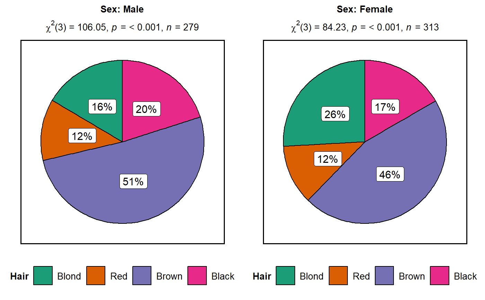

Helper function for ggstatsplot::ggpiestats to apply this
function across multiple levels of a given factor and combining the
resulting plots using ggstatsplot::combine_plots.
grouped_ggpiestats( data, main, condition = NULL, counts = NULL, grouping.var, title.prefix = NULL, output = "plot", x = NULL, y = NULL, ..., plotgrid.args = list(), title.text = NULL, title.args = list(size = 16, fontface = "bold"), caption.text = NULL, caption.args = list(size = 10), sub.text = NULL, sub.args = list(size = 12) )
Arguments
| data | A dataframe (or a tibble) from which variables specified are to be taken. A matrix or tables will not be accepted. |
|---|---|
| main | The variable to use as the rows in the contingency table. |
| condition | The variable to use as the columns in the contingency
table. Default is |
| counts | A string naming a variable in data containing counts, or |
| grouping.var | A single grouping variable (can be entered either as a
bare name |
| title.prefix | Character string specifying the prefix text for the fixed
plot title (name of each factor level) (Default: |
| output | Character that describes what is to be returned: can be
|
| x | The variable to use as the rows in the contingency table. |
| y | The variable to use as the columns in the contingency
table. Default is |
| ... | Arguments passed on to
|
| plotgrid.args | A list of additional arguments to |
| title.text | String or plotmath expression to be drawn as title for the combined plot. |
| title.args | A list of additional arguments
provided to |
| caption.text | String or plotmath expression to be drawn as the caption for the combined plot. |
| caption.args | A list of additional arguments
provided to |
| sub.text | The label with which the combined plot should be annotated. Can be a plotmath expression. |
| sub.args | A list of additional arguments
provided to |
Value
Unlike a number of statistical softwares, ggstatsplot doesn't
provide the option for Yates' correction for the Pearson's chi-squared
statistic. This is due to compelling amount of Monte-Carlo simulation
research which suggests that the Yates' correction is overly conservative,
even in small sample sizes. As such it is recommended that it should not
ever be applied in practice (Camilli & Hopkins, 1978, 1979; Feinberg, 1980;
Larntz, 1978; Thompson, 1988).
For more about how the effect size measures and their confidence intervals
are computed, see ?rcompanion::cohenG, ?rcompanion::cramerV, and
?rcompanion::cramerVFit.
References
https://indrajeetpatil.github.io/ggstatsplot/articles/web_only/ggpiestats.html
See also
Examples
# \donttest{ # grouped one-sample proportion tests ggstatsplot::grouped_ggpiestats( data = mtcars, grouping.var = am, x = cyl )#> Note: 95% CI for effect size estimate was computed with 100 bootstrap samples. #>#>#> Warning: Chi-squared approximation may be incorrect#> Note: 95% CI for effect size estimate was computed with 100 bootstrap samples. #>#># the following will take slightly more amount of time # for reproducibility set.seed(123) # let's create a smaller dataframe diamonds_short <- ggplot2::diamonds %>% dplyr::filter(.data = ., cut %in% c("Fair", "Very Good", "Ideal")) %>% dplyr::sample_frac(tbl = ., size = 0.10) # plot ggstatsplot::grouped_ggpiestats( data = diamonds_short, x = color, y = clarity, grouping.var = cut, nboot = 20, sampling.plan = "poisson", title.prefix = "Quality", slice.label = "both", messages = FALSE, perc.k = 1, plotgrid.args = list(nrow = 3) )#> Warning: Chi-squared approximation may be incorrect#> Warning: Chi-squared approximation may be incorrect#> Warning: Chi-squared approximation may be incorrect#> Warning: Chi-squared approximation may be incorrect#> Warning: Chi-squared approximation may be incorrect#> Warning: Chi-squared approximation may be incorrect#> Warning: Chi-squared approximation may be incorrect#> Warning: Chi-squared approximation may be incorrect#> Warning: Chi-squared approximation may be incorrect#> Warning: Chi-squared approximation may be incorrect#> Warning: Chi-squared approximation may be incorrect# }